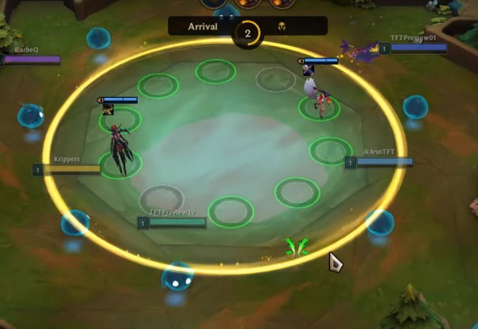
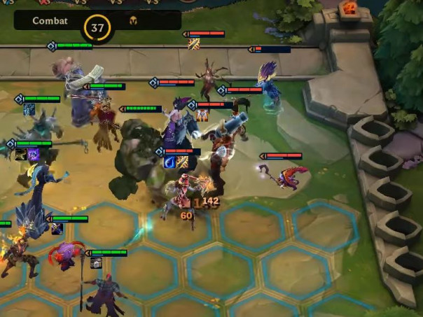

Teamfight Tactics (ou combats tactique) est lancé par Riot Games le 26 Juin 2019,
en se basant sur l'Auto Chess-like. Vous trouverez dans cette page tout ce dont
il faut savoir !
Teamfight Tactics (ou combats tactique) est lancé par Riot Games le 26 Juin 2019,
en se basant sur l'Auto Chess-like. Vous trouverez dans cette page tout ce dont
il faut savoir !
Teamfight Tactics est un jeu ou vous combattez sept adversaires
dont le but est de construire une équipe afin de survivre et d'en être
le dernier survivant.

Teamfight Tactics est un jeu de stratégie dans lequel 8 joueurs s'affrontent.
Chaque joueur incarne un avatar appelé Petite Légende qui doit se constituer une armée de personnages et les disposer sur un plateau,
avant de l'opposer aux armées des autres joueurs dans une suite de duels.
Au cours des combats, les joueurs ne peuvent pas donner d'ordres à leurs unités, c'est l'I.A. qui prend le relais.
Quand un joueur remporte un duel, il blesse le joueur adverse. Le dernier joueur encore en vie remporte la partie.
"Phase Carrousel"
"Phase de préparation"
"Phase de combat"
Plus de details:
millenium.gg/guide/Jouer gratuitement sur mobiles et PC !
Available on the
App Store
Get it on
Google Play